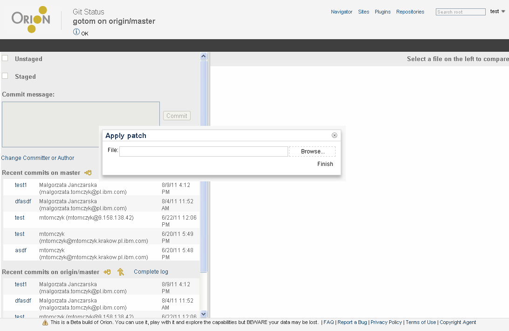

<map name="map">
<!-- #$-:Image map file created by GIMP Image Map plug-in -->
<!-- #$-:GIMP Image Map plug-in by Maurits Rijk -->
<!-- #$-:Please do not edit lines starting with "#$" -->
<!-- #$VERSION:2.3 -->
<!-- #$AUTHOR:tzarna  -->
<area shape="rect" coords="703,280,735,303" href="git-status.html" />
<area shape="rect" coords="650,341,730,363" href="git-status.html" />
</map>
